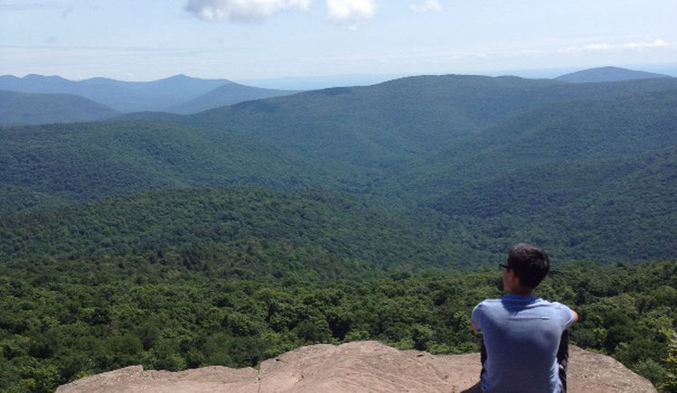

About Me / Bio
Electrical and Computer Engineering student at the University of Virginia

My name is Cesar and I am a rising fourth-year student at UVA double majoring in Electrical and Computer Engineering with a minor in Design Integration. My main interests lie in the fields of embedded systems design, hardware and software engineering, mechatronics and robotics.
While at UVA, I have been part of the Technology Leaders Program (TLP), the Society of Hispanic Professional Engineers (SHPE), the Mechatronics and Robotics Society (MARS), as well as an undergradute research asisstant at the Robust Low Power VLSI Research Lab. I am very passionate about engineering and design, but in my free time I enjoy sketching, making art, hiking and playing sports.
Being part of the TLP has allowed me to collaborate with fellow engineering student of different disciplines in a variety of projects, some of which are included in this portfolio.